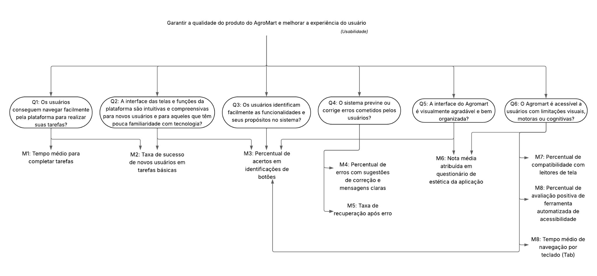
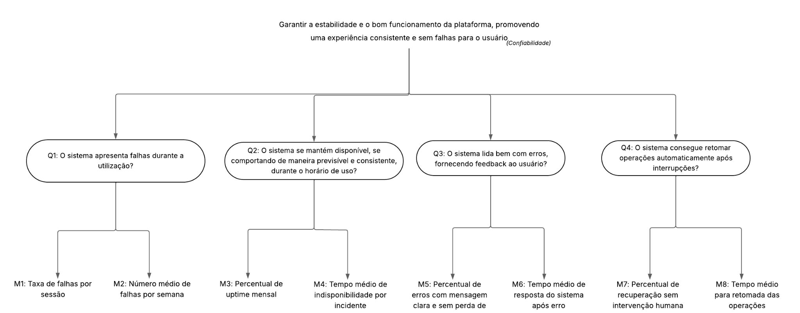

Objetivo de Negócio do AgroMart
O objetivo de negócio do AGROMART é desenvolver um software inovador que estabeleça uma conexão direta entre agricultores e consumidores, especialmente em resposta aos desafios impostos pelo isolamento social durante a pandemia da COVID-19. A plataforma tem como foco principal facilitar e fortalecer a comercialização de produtos agroecológicos, promovendo o acesso direto ao mercado para pequenos produtores rurais.
O AGROMART funciona como uma ferramenta digital de apoio à criação e à gestão de Comunidades que Sustentam a Agricultura (CSAs), permitindo que os produtores organizem entregas, compartilhem informações sobre os produtos e se comuniquem diretamente com os consumidores e com as comunidades envolvidas. Além disso, a plataforma visa melhorar a gestão e o engajamento entre agricultores e administradores das CSAs, por meio de um sistema acessível, estável e adaptado às necessidades específicas de ambos os perfis.
O projeto busca enfrentar desafios recorrentes no meio rural, como a dificuldade de inserção no mercado formal e a dependência de intermediários, que muitas vezes reduzem a margem de lucro do produtor. Para isso, o AGROMART oferece funcionalidades como cadastro de usuários, listagem e pedido de produtos, gestão de entregas e apoio à formação de grupos de consumo consciente.
Objetivo de Medição 1: Usabilidade
| Analisar | o AgroMart |
| Para o propósito de | entender a qualidade do produto da plataforma para melhorar a experiência do usuário |
| Com respeito a | usabilidade |
| Do ponto de vista da | equipe de desenvolvimento |
| No contexto da | disciplina |
Objetivo de Medição 2: Confiabilidade
| Analisar | o AgroMart |
| Para o propósito de | Entender a estabilidade e o bom funcionamento da plataforma, promovendo uma experiência consistente e sem falhas para o usuário |
| Com respeito a | confiabilidade |
| Do ponto de vista da | equipe de desenvolvimento |
| No contexto da | disciplina |
Questões Objetivo de Medição 1: Usabilidade
Q1: Os usuários conseguem navegar facilmente pela plataforma para realizar suas tarefas?
Hipótese 1: A maioria dos usuários consegue completar suas tarefas sem dificuldades significativas.Q2: A interface das telas e funções da plataforma são intuitivas e compreensivas para novos usuários?
Hipótese 2: Novos usuários e usuários com baixa familiaridade com a tecnologia, conseguem entender e utilizar a plataforma com mínima orientação.Q3: Os usuários identificam facilmente as funcionalidades e seus propósitos no sistema?
Hipótese 3: Mais de 85% dos usuários compreendem os ícones e botões sem a necessidade de ajuda externa ou tutorial.Q4: O sistema previne ou corrige erros cometidos pelos usuários?
Hipótese 4: O Agromart oferece mensagens claras e opções de correção em mais de 90% dos erros detectados.Q5: A interface do Agromart é visualmente agradável e bem organizada?
Hipótese 5: Mais de 90% dos usuários avaliam a estética como organizadas, cores agradáveis e hierarquia visual.Q6: O Agromart é acessível a usuários com limitações visuais, motoras ou cognitivas?
Hipótese 6: O sistema é compatível com leitores de tela e possui contraste adequado em mais de 95% das telas avaliadas.
Questões Objetivo de Medição 2: Confiabilidade
Q1: O sistema apresenta falhas durante a utilização?
Hipótese 1: As falhas são raras e afetam menos de 5% das sessões.Q2: O sistema se mantém disponível, se comportando de maneira previsível e consistente, durante o horário de uso?
Hipótese 2: O tempo de disponibilidade é superior a 99% no mês.Q3: O sistema lida bem com erros, fornecendo feedback ao usuário?
Hipótese 3: Em 90% dos erros, há mensagens claras e sem perda de dados.Q4: O sistema consegue retomar operações automaticamente após interrupções?
Hipótese 4: O sistema retoma suas operações em mais de 95% dos casos de interrupções, sem necessidade de ajuda externa.
Relação entre Objetivos de Medição - Questões e Métricas - Objetivo de Medição 1: Usabilidade

Relação entre Objetivos de Medição - Questões e Métricas - Objetivo de Medição 2: Confiabilidade

Tabela de Contribuição
| Matrícula | Nome completo | Contribuição (%) |
|---|---|---|
| 221007798 | Ana Júlia Mendes Santos | 19 |
| 221022355 | Júlia Rocha Fortunato | 19 |
| 221008338 | Maria Clara Oleari de Araujo | 19 |
| 222007021 | Maurício Ferreira de Araújo | 19 |
| 222006356 | Pedro Lock Martins | 5 |
| 221022767 | Weverton Rodrigues da Costa Silva | 19 |
Historico de Versões
| Versão | Data | Descrição | Autor | Revisor |
|---|---|---|---|---|
1.0 |
22/05/2025 | Criação do documento | Weverton Rodrigues | Júlia Fortunato |